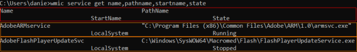

see code of a module
show the content of these scripts
We have to go in the metasploit-framework folder
we can do it both in the shell that in the msf console
msf> cat /usr/share/metasploit-framework/modules/post/windows/gather/enum_domain_group_users.rb #add .rb at the end of the module
or
root@kali:/home/kali# cd /usr/share/metasploit-framework/modules
root@kali:/home/kali# cat post/windows/gather/enum_domain_group_users.rb #add .rb at the end of the module
root@kali:/home/kali# cat post/windows/gather/enum_domain_group_users.rb #add .rb at the end of the module

Some metasploit scripts are very useful but usually we can get similar results from a shell
root@kali:/home/kali# cat /usr/share/metasploit-framework/modules/post/windows/gather/enum_services.rb
C:\Users\danie> wmic service get name,pathname,startname,state #list name services on cmd
C:\Users\danie> %windir%\system32\services.msc #start GUI interface
C:\Users\danie> %windir%\system32\services.msc #start GUI interface
